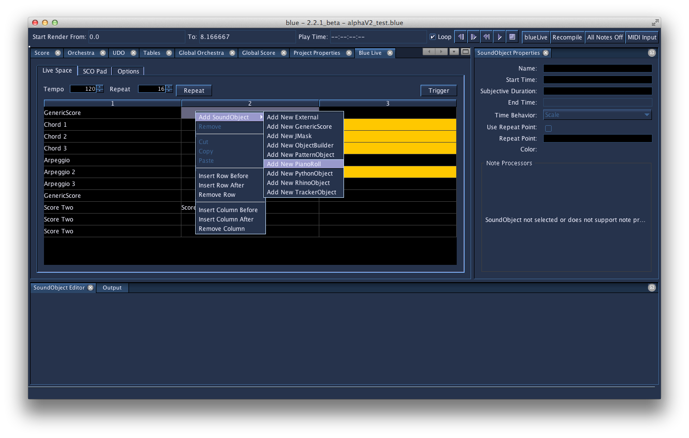

Blue Live
Blue Live

Blue Live allows you to work with Csound in realtime. It allows for generating score with SoundObjects and working with MIDI keyboard input to create notes and run with Csound instruments defined in your project. Note: Blue Live works when using the Csound API, or on non-Windows platforms when not using the Csound API. Windows does not allow piping text to executable in a non-blocking way and therefore limits what can be done when not using the API.
Motivation
The motivation of Blue Live is primarily to aid the composer in working out ideas and to help configure instrument, effects, and mixer settings. You may find it helpful early on within the life a composition, when you want to try out a number of different ideas in realtime. You may tweak instrument parameters, mixer settings, try out different notes and chords with a MIDI keyboard, and even work with different SoundObjects. Later, when you have some ideas worked out, you can take your SoundObjects from BlueLive into your score timeline and continue working from there.
Beyond this primary capacity as a mode to aid composition, Blue Live has some capacity to be used for realtime performance. The focus of Blue Live's development is as a compositional aid first, and performance second, though work continues to expand its usefulness in both regards.
Working with Blue Live
Blue Live is designed to work with the rest of your Blue project file. When Blue Live is turned on, the Blue project generates everything from the project except for the Score generated from the Score timeline. The Global Score text will be used, but instead of <TOTAL_DUR> being calculated from the score timeline, a default value of 3600 is used. This allows your notes that would be used for effects instruments to run for 3600 seconds (this size can be modified; please make a request if desired).
The main toolbar has four buttons for Blue Live:
-
BlueLive
Toggle button that stops and starts BlueLive -
Recompile
If BlueLive is running, this button will cause Blue to recompile the CSD from your project and restart BlueLive. This is useful if you modify your orchestra code and want to quickly recompile and continue working with BlueLive. -
All Notes Off
Turns off any score notes that are actively playing -
MIDI Input
Toggle button that turns on and off the configured MIDI devices setup in Program Options (discussed further below).
The primary Blue Live window is available from the Window Menu, or by using the ctrl-8 shortcut. The Blue Live window has three main tabs: the Live Space, the SCO Pad, and Options. These will be discussed int he following sections.
Live Space
The Live Space is an area to work with SoundObjects. It is a table divided into bins and rows of spaces to place SoundObjects. SoundObjects can be copied to/from the Score Timeline as well as the Live Space. SoundObjects can also be created within the Live Space by right clicking an empty bin within the bins and choosing "Add SoundObject" from the popup menu. Clicking on an occupied bin will select that SoundObject. The properties for the SoundObject can be modified using the SoundObject Properties Window, and the contents of the SoundObject can be modified from the SoundObject Editor Window. Besides the selected and unselected states, you can double-click a soundObject to put it into an enabled state. Enabled objects are highlighted in orange and are the SoundObjects that are triggered when multi-trigger or repeat is used.
Once a SoundObject is added to the Live Space, it can be triggered in one of two ways:
-
Single Trigger
Trigger the contents of the currently selected SoundObject. This is done by using the keyboard shortcut ctrl-T (cmd-T on OSX). -
Multi Trigger
Triggers the contents of the currently enabled SoundObjects. This is done either by using the Trigger button, or using the keyboard shortcut ctrl-shift-T (cmd-shift-T on OSX).
Triggering a soundObject will take the score generated from it and pass it immediately to the active Csound instance for BlueLive (BlueLive must be running for this to work). Scores are always generated with Time Behavior of None, processed through their NoteProcessors, then scaled according to the given tempo.
One can turn on Repeat to cause repeated trigger of enabled SoundObjects according to the tempo given and the number of beats in which to retrigger. For example, using a repeat of 4 means it will re-trigger every four beats. The score is processed as mentioned above, but there is no truncation done. Therefore, if a SoundObject generates a score of 8 beats, and there is a repeat of 4 beats, when the repeat occurs, there will be 4 beats of overlap between the first trigger and the second trigger.
When Repeat is on, it will always finish out the current number of beats in the repeat at the current tempo, before applying any changes to tempo and repeat. Modifyications to tempo and repeat will apply then on the next repeat trigger.
Live Code
The live coding tab holds Csound Orchestra code for live coding. Once BlueLive is enabled, you can select code within the Live Code tab and use the "ctrl-e" (cmd-e on OSX) shortcut to evaluate the code in the running Csound instance.
SCO Pad
This is an experimental feature to record MIDI input in a manner similar to to notation programs (press keys, then press 4 for a quarter note, 8 for and 8th note, etc.). This feature requires MIDI Input to be turned on. This feature is experimental at this time.
Options
The options panel allows setting up parameters for Blue Live. Currently it contains options for modifying the commandline string used when running BlueLive. For most users, these modification will not be necessary and the default commandline used will be sufficient.
Working with MIDI
Blue's MIDI system, when enabled, will listen to configured MIDI devices for notes, map the key and velocity, and generate Csound notes to achieve MIDI-like note-on and note-off type behavior. This allows working with a MIDI keyboard in realtime with your project instruments without modifying your instruments specifically for MIDI. This also means that when Blue's MIDI system is enabled, Csound MIDI processing should be disabled for your project.
To configure what MIDI devices to use, go to the program Options settings (on OSX it is the application's Preferences, on other platofrms it is the Options menu item in the Tools menu) and under "Blue", go to MIDI. There you will see a list of MIDI devices connected to your computer. If you connected a device after starting Blue, you can rescan to find your MIDI device. In this window you will configure what MIDI devices you want to use with Blue, but these devices will not be opened for listening until you enable MIDI Input on the BlueLive toolbar in the main application.
Once you have configured what devices to use with Blue, return to the main program and enable MIDI input using the "MIDI Input" button, then start BlueLive. At this point, when MIDI notes are played, Blue will take the incoming note data, map it according to the values configured in the MIDI Input Panel window (available from the Windows Menu), and then generate notes and pass them to Csound.
For a MIDI note on, Blue will the channel number of the note and map it to the instrument in the orchestra manager by index. For example, if you have three instruments numbered 1, 3, and 5, notes for MIDI channel 1 will generate with instr 1, notes for MIDI channel 2 will generate with instr 3, and notes for MIDI channel 3 will generate with instr 5.
The MIDI key number as well as the velocity will be mapped according to the settings set in the MIDI Input Panel window. This allows for generating frequency, Csound PCH, and using Scala Tuning files to generate either frequencies or BluePCH format text, amongst other values.
Instruments that are intended to be used with Blue's MIDI system will have to work with a 5 p-field note format. This does not mean your instrument can only work with 5 p-fields, but rather that your instrument must support at least that. An example Blue project can be found in examples/features/blueLiveMidi.blue (if you are using the OSX application, you may need to explore the contents of the Blue.app program to find the examples folder).
Exploring Ideas
Blue Live uses a subset of the same soundObjects that are available on the score timeline within the main editing window of Blue. Some possible ways you could explore ideas are:
-
Trying out SCO ideas with GenericScore
-
Testing your python functions with the PythonObject
-
Testing your javaScript functions with the JavaScriptOObject
-
Using Cmask, nGen, Common Music, and other programs with the external soundObject to try out things live